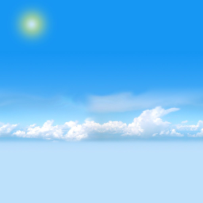
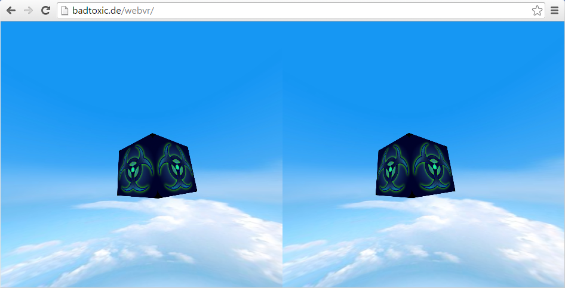

Japanreise 2016
Mein Ausflug in eine andere Welt
Erstellt von Michael Grönert (BadToxic)
Diese Folien: badtoxic.de/japan-2016 TODO
Auch auf Github: github.com/BadToxic/japan-2016
Überblick
- Japan - Datenblatt
Japan - Datenblatt

- Japan = 日本, Nihon/Nippon
- 6852 Inseln
- 127.110.047 Einwohner (2015)
- 382.871 km² Fläche
- 9.047,98 km entfernt
Reise Vorbereitungen
Reisepass
Steckdosen-Adapter
Keine Impfungen
Tokyo Game Show

20. Jubiläum
271.224 Besucher
614 Aussteller (345 Ausland)
Business Days 15. & 16.09.
Presse für Planet3DS

Presse-Ausweis-Bild TODO
Ehrenamtlicher Redakteur
Simon als Freelancer
Wo sind die Spiele?
TGS = Tokyo Girl Show?
TODO: Mädchen-Kollage
Im Mittelpunkt: VR
TODO: VR Bilder
Die großen Spiele kommen
VR scheint bereits normal
Neue Eingabegeräte
Entwicklung - Unreal Engine 4
Entwicklung - Unity 3D
WebVR - Was ist das?
Javascript API (Application Programming Interface)
Ermöglicht VR in Browsern (z.B. für Cardboards)
Noch experimentell
WebVR - Wie benutzen?
- Firefox nightly builds (+ Oculus Rift Enabler)
- Experimental Chromium Builds
- Samsung Internet for Gear VR
- Und in anderen Browsern (iOS Safari, ...)
WebVR Beispiel
Grundlage
Startpunkt: Boris’ WebVR Boilerplate repo
Nutzt: THREE.js
git clone https://github.com/borismus/webvr-boilerplate.git
Skybox
Textur zum "tapezieren" einer umhüllenden Sphere
Quelle: voodoomagic-solinvictus.blogspot.de
Größe muss Zweierpotenz sein
64x64, 256x128, 512x1024...
Skybox einbinden
var textureLoader = new THREE.TextureLoader();
var skybox;
textureLoader.load('img/skybox.png', function (skyboxTexture) {
var skyboxMaterial = new THREE.MeshBasicMaterial();
skyboxMaterial.map = skyboxTexture;
skyboxMaterial.side = THREE.BackSide;
// Create the mesh based on geometry and material
var skyboxSphereGeometry = new THREE.SphereGeometry(50, 200, 200);
var skyboxmesh = new THREE.Mesh(skyboxSphereGeometry, skyboxMaterial);
skybox = new THREE.Mesh(skyboxSphereGeometry, skyboxMaterial);
scene.add(skybox);
};
Würfel texturieren
textureLoader.load('img/toxicon_logo.png', function (toxiconLogoTexture) {
var toxiconCubeGeometry = new THREE.BoxGeometry(0.5, 0.5, 0.5);
var toxiconCubeMaterial = new THREE.MeshBasicMaterial();
toxiconCubeMaterial.map = toxiconLogoTexture;
toxiconCube = new THREE.Mesh(toxiconCubeGeometry, toxiconCubeMaterial);
// Position cube mesh to be right in front of you.
toxiconCube.position.set(0, controls.userHeight, -1);
// Add cube mesh to your three.js scene
scene.add(toxiconCube);
});
Fertig!

Quellen | News
Vielen Dank

Homepage: badtoxic.de
Twitter: @BadToxic